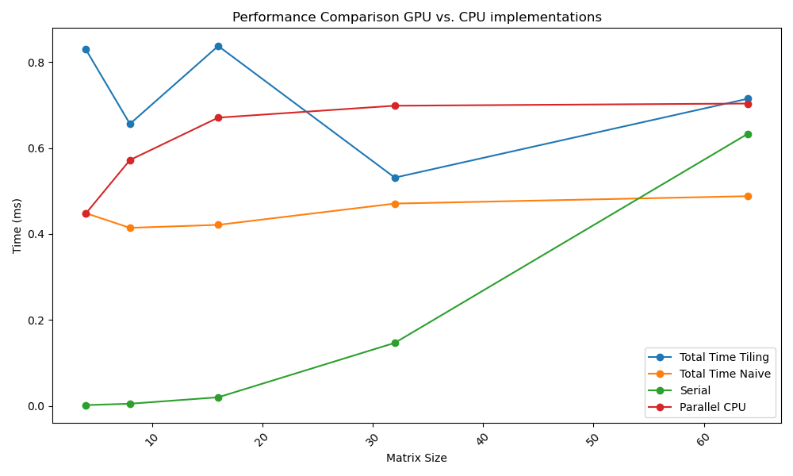

Aufgaben:
Anwendungsgebiete
Aufgaben
Anwendungsgebiete
Erstveröffentlichung: CUDA wurde erstmals im Juni 2007 eingeführt.
Aktuelle Version: 12.2 (Stand: 28. Juni 2023)
Definition: CUDA Compute Capability bezieht sich auf die Hardware-Generation von NVIDIA GPUs, die CUDA unterstützt.
Aktuellste: NVIDIA H100 9.0 (Hopper Architektur)
Dominanz im HPC-Sektor
Innovation in wissenschaftlichen Anwendungen
Starke Präsenz in der KI-Forschung und -Entwicklung
Bevorzugte Plattform für komplexe KI-Modelle und Deep Learning
Hello CUDA
#include "cuda_runtime.h"
#include "device_launch_parameters.h"
#include <stdio.h>
/**
* KernelFunktion (Ausführung auf der GPU)
*/
__global__ void hello_cuda()
{
printf("Hello CUDA!\n");
}
/**
* Host Code (Ausführung auf der CPU)
*/
int main()
{
hello_cuda <<<1,1>>> (); // Kernel Launch, was ist '<< <1,1> >>' ?
cudaDeviceSynchronize();
cudaDeviceReset();
return 0;
}
Kernelfunktion
__global__ void called_from_host(int* some_data, int size) { ... }
Devicefunktion
__device__ int called_from_device(int* some_data, int size) { ... }
Modifiers
#include "cuda_runtime.h"
#include "device_launch_parameters.h"
#include <string>
#include <stdio.h>
using namespace std;
__device__ const char* part_two() {
return "CUDA";
}
__device__ const char* part_one() {
return "Hello";
}
__device__ void result(char* buffer, size_t bufferSize) {
const char* p1 = part_one();
const char* p2 = part_two();
const char* to_append = "!!!";
snprintf(buffer, bufferSize, "%s %s%s", p1, p2, to_append);
}
__global__ void i_am_api()
{
char buffer[50];
result(buffer, sizeof(buffer));
printf("%s\n", buffer);
}
// Host Code wie zuvor
GPUs sind primär Rechenmaschinen ihre Stärke liegt in der hohen parallelisierbarkeit einfacher Rechenoperationen
Stattdessen spezialisierte Libraries wie:
...
cudaDeviceSynchronize();
cudaDeviceReset();
...
cudaDeviceSynchronize() vgl. join()cudaDeviceReset() hello_cuda <<<a,b>>>();
dim3 grid, block;
block = dim3(32); // dim3(32,1,1) == 32
grid = dim3(48); // dim3(48,1,1) == 48
hello_cuda <<<grid, block>>>();
Ausgabe: 32 * 48 = 1536 mal Hello CUDA
Threads werden in Blöcken organisiert
Für jeden Block gilt: $X \times Y\times Z \leq 1024$ (bzw. 512 abhängig von CC)
Blöcke werden in Grids organisiert
$$#threads = 1024 * (2^{31}-1) * 65535 * 65535 = 2.305.843.008.139.952.128$$ (theoretisches Maximum CC $\geq$ 7.5)
threadId ist nur innerhalb eines Blocks eindeutig!
gid - muss separat berechnet werden
// Launch Konfiguration grid = dim3(48, 1, 1) & block = dim(256, 1, 1)
int gid = blockIdx.x * blockDim.x + threadIdx.x
// Launch Konfiguration grid = dim3(48, 48, 1) & block = dim(256, 1, 1)
int tid = threadIdx.x;
int block_offset = blockIdx.x * blockDim.x;
int row_offset = gridDim.x * blockDim.x * blockIdx.y;
int gid = row_offset + block_offset + tid;
Abhängig vom Problem benötigen wir keine gid
// Launch Konfiguration grid = dim(48, 48, 1) & block = dim(128, 128, 1)
// Für Matrizenberechnung
int row = blockIdx.y * blockDim.y + threadIdx.y;
int col = blockIdx.x * blockDim.x + threadIdx.x;
Matrixmultiplaktion
#include "cuda_runtime.h"
#include "device_launch_parameters.h"
#include "time.h"
__device__ float multiply(float a, float b) {
return a * b;
}
__global__ void mat_mul() {
int row = blockIdx.y * blockDim.y + threadIdx.y;
int col = blockIdx.x * blockDim.x + threadIdx.x;
// Hier Matrixmutiplikation ausführen
}
void fillMatrix(float *matrix, int width, int height) {
for (int i = 0; i < height; ++i) {
for (int j = 0; j < width; ++j) {
matrix[i * width + j] = (float)rand() / (float)(RAND_MAX / 10);
}
}
}
int main(void) {
int matSize = 1000;
int matSizeBytes = matSize * matSize * sizeof(float);
srand(time(NULL));
float *matrixA, *matrixB, *result;
*matrixA = (float *)malloc(matSizeBytes);
*matrixB = (float *)malloc(matSizeBytes);
*result = (float *)malloc(matSizeBytes);
if (matrixA == NULL || matrixB == NULL || result == NULL) {
fprintf(stderr, "Speicherzuweisung fehlgeschlagen.\n");
return 1;
}
fillMatrix(matrixA, matSize, matSize);
fillMatrix(matrixA, matSize, matSize);
dim3 blockSize(10,10);
dim3 gridSize((matSize + blockSize.x-1)/blockSize.x, (matSize + blockSize.y-1)/blockSize.y);
// Wie übergeben wir die Matrix bzw. allgemein Werte an die GPU?
mat_mul <<<gridSize, blockSize>>>();
cudaDeviceSynchronize();
cudaDeviceReset();
}
cudaMalloc(void **devPtr, size_t size) vgl. malloc()cudaMemcpy(void *dest, void *scr, size_t size, cudaMemcpyKind m)cudaFree() vgl. free()cudaMemcpyKind
Matrixmultiplaktion: Mit Datenübertragung
#include "cuda_runtime.h"
#include "device_launch_parameters.h"
#include "time.h"
__device__ float multiply(float a, float b) { return a * b; }
__global__ void mat_mul(float *matA, float *matB, float *res, int size) {
int row = blockIdx.y * blockDim.y + threadIdx.y;
int col = blockIdx.x * blockDim.x + threadIdx.x;
if (row < size && col < size) {
float sum = 0.0;
for (int k = 0; k < size; k++) {
sum += multiply(matA[row * size + k], matB[k * size + col]);
}
res[row * size + col] = sum;
}
}
// fill Matrix unverändert
void fillMatrix(float *matrix, int width, int height) {...}
Matrixmultiplaktion: Mit Datenübertragung
int main(void) {
int matSize = 1000;
int matSizeBytes = 1000 * 1000 * sizeof(float);
srand(time(NULL));
float *h_matA, *h_matB, *h_res, *d_matA, *d_matB, *d_res;
h_matA = (float *)malloc(matSizeBytes);
h_matB = (float *)malloc(matSizeBytes);
h_res = (float *)malloc(matSizeBytes);
if (h_matA == NULL || h_matB == NULL || h_res == NULL) { fprintf(stderr, "Speicherzuweisung fehlgeschlagen.\n");
return 1;
}
fillMatrix(h_matA, matSize, matSize);
fillMatrix(h_matB, matSize, matSize);
cudaMalloc((void**)&d_matA, matSizeBytes); // Speicherallokation auf dem Device
cudaMalloc((void**)&d_matB, matSizeBytes);
cudaMalloc((void**)&d_res, matSizeBytes);
//...
Matrixmultiplikation: mit Datenübertragung
//...
cudaMemcpy(d_matA, h_matA, matSizeBytes, cudaMemcpyHostToDevice); // Von Host zu Device
cudaMemcpy(d_matB, h_matB, matSizeBytes, cudaMemcpyHostToDevice);
dim3 blockSize(10,10);
dim3 gridSize((matSize + blockSize.x-1)/blockSize.x, (matSize + blockSize.y-1)/blockSize.y);
mat_mul <<<gridSize, blockSize>>>(d_matA, d_matB, d_res, matSize);
cudaDeviceSynchronize();
cudaMemcpy(h_res, d_res, matSizeBytes, cudaMemcpyDeviceToHost); // Von Device zu Host
cudaFree(d_matA); cudaFree(d_matB); cudaFree(d_res); // Speicherfreigabe Device
free(h_matA); free(h_matB); free(h_res); // Speicherfreigabe Host
cudaDeviceReset();
}
Returntype cudaError
cudaError_t status = cudaMalloc((void**)&devicePtr, size);
if (status != cudaSuccess) {
fprintf(stderr, "cudaMalloc failed: %s\n", cudaGetErrorString(status));
// Fehlerbehandlung...
}
Was wenn der Funktionsaufruf keinen Wert zurückgibt?
cudaGetLastError()
a_kernel_function<<<grid, blocks>>>(...);
cudaError_t status = cudaGetLastError();
if (status != cudaSuccess) {
fprintf(stderr, "Kernel launch failed: %s\n", cudaGetErrorString(status));
// Fehlerbehandlung
}
cudaDeviceProp properties & cudaGetDeviceProperties(&properties, deviceNumber)
Informationen:
void query_device() {
int devNo = 0;
cudaDeviceProp iProp;
cudaGetDeviceProperties(&iProp, devNo);
printf("Anzahl der MP: %d\n", iProp.multiProcessorCount);
printf("Max Anzahl von Threads pro MP: %d\n", iProp.maxThreadsPerMultiProcessor);
printf("Warp-Größe: %d\n", iProp.warpSize);
printf("Warps pro MP: %d\n", iProp.maxThreadsPerMultiProcessor / iProp.warpSize);
}
Ausgabe:
Anzahl der Multiprozessoren: 48
Maximale Anzahl von Threads pro Multiprozessor: 1536
Warp-Größe: 32
Maximale Anzahl von Warps pro Multiprozessor: 48
Können einen der folgenden Zustände annehmen:

Ungünstige Blockgröße:
Single Instruction Multiple Threads (spezialfall von SIMD)
SIMT bietet höhere Flexibilität auf Kosten der Performance
Control flow statements mit divergierenden Pfaden (innerhalb eines Warps).
__global__ void this_causes_warp_divergence() {
int tid = threadIdx.x;
if (tid % 2 == 0) {
// do something
} else {
// do something else
}
}

Divergierende Pfade werden seriell ausgeführt.
Performanceverlust: 50%
Metrik für Warp Divergence ist die branch efficiency
$\text{Branch Efficiency} = 100% \times \frac{#\text{Branches}- #\text{Divergent\ Branches}}{\text{#Branches}}$
__global__ void this_does_not_cause_warp_divergence() {
// Jeder Threadblock hat 64 Threads
int tid = blockIdx.x * threadIdx.x;
if (tid / 32 < 1) {
// do something
} else {
// do something else
}
}
Warps innerhalb eines Blocks nicht notwendigerweise synchron!
Synchronisierung erfolgt mittels:
__syncthreads() (vgl. pthread_barrier_wait(...))
__global__ void modifyArray(int *data, int n) {
int index = blockIdx.x * blockDim.x + threadIdx.x;
data[index] += 1;
__syncthreads();
if (index % 2 == 0) {
data[index] *= 2;
}
}
Nsight Compute
nvprof


Matrixmultiplikation: Anpassung der Blockgröße
#include "cuda_runtime.h"
#include "device_launch_parameters.h"
#include "time.h"
__device__ float multiply(float a, float b) { return a * b; }
__global__ void mat_mul(float *matA, float *matB, float *res, int size) {
int row = blockIdx.y * blockDim.y + threadIdx.y;
int col = blockIdx.x * blockDim.x + threadIdx.x;
if (row < size && col < size) {
float sum = 0.0;
for (int i = 0; i < size; i++) {
sum += multiply(matA[row * size + i], matB[i * size + col]);
}
res[row * size + col] = sum;
}
}
// fill Matrix unverändert
void fillMatrix(float *matrix, int width, int height) {...}
Matrixmultiplikation: Anpassung der Blockgröße
int main(void) {
int matSize = 1024; // Neue größe Teilbar durch 32 - vermeidung von überprüfung im Kernel
int matSizeBytes = matSize * matSize * sizeof(float);
srand(time(NULL));
float *h_matA, *h_matB, *h_res, *d_matA, *d_matB, *d_res;
h_matA = (float *)malloc(matSizeBytes);
h_matB = (float *)malloc(matSizeBytes);
h_res = (float *)malloc(matSizeBytes);
if (h_matA == NULL || h_matB == NULL || h_res == NULL) { fprintf(stderr, "Speicherzuweisung fehlgeschlagen.\n");
return 1;
}
fillMatrix(h_matA, matSize, matSize);
fillMatrix(h_matB, matSize, matSize);
cudaMalloc((void**)&d_matA, matSizeBytes); // Speicherallokation auf dem Device
cudaMalloc((void**)&d_matB, matSizeBytes);
cudaMalloc((void**)&d_res, matSizeBytes);
//...
Matrixmultiplikation: Anpassung der Bockgröße
//...
cudaMemcpy(d_matA, h_matA, matSizeBytes, cudaMemcpyHostToDevice); // Von Host zu Device
cudaMemcpy(d_matB, h_matB, matSizeBytes, cudaMemcpyHostToDevice);
dim3 blockSize(16,16); // 16 * 16 = 256 % 32 == 0
dim3 gridSize((matSize + blockSize.x-1)/blockSize.x, (matSize + blockSize.y-1)/blockSize.y);
mat_mul <<<gridSize, blockSize>>>(d_matA, d_matB, d_res, matSize);
cudaDeviceSynchronize();
cudaMemcpy(h_res, d_res, matSizeBytes, cudaMemcpyDeviceToHost); // Von Device zu Host
cudaFree(d_matA); cudaFree(d_matB); cudaFree(d_res); // Speicherfreigabe Device
free(h_matA); free(h_matB); free(h_res); // Speicherfreigabe Host
cudaDeviceReset();
}
Speicherhierarchien:
 NVIDIA Hopper Architecture
Thread Block Clusters als neue Abstraktionsebene
NVIDIA Hopper Architecture
Thread Block Clusters als neue Abstraktionsebene
| Memory Type | Location | Cached | Access | Scope | Lifetime |
|---|---|---|---|---|---|
| Register | On-chip | n/a | R/W | 1 thread | Thread |
| Local | Off-chip | Yes* | R/W | 1 thread | Thread |
| Shared | On-chip | n/a | R/W | All threads in block | Block |
| Global | Off-chip | * | R/W | All threads + host | Host allocation |
Speicherzugriffszeit:
Zero Copy Memory
Zugriff langsamer als Device Speicher (über PCIe für externe GPU)
cudaHostAlloc((void**)&hostPtr, size, cudaHostAllocMapped);
cudaHostGetDevicePointer(&devicePtr, hostPtr, 0);
myKernel<<<blocks, threads>>>(devicePtr);
Constant Memory
Speicher für konst. Daten welche von vielen Threads gelesen werden.
__constant__ float constData[256];
__global__ void myKernel(float *data) {
int i = threadIdx.x;
float val = constData[i];
}
// Kopieren von Daten in den Constant Memory
cudaMemcpyToSymbol(constData, hostData, sizeof(float) * 256);
Texture Memory
Häufig eingesetzt in der Bildverarbeitung
texture<float, cudaTextureType1D, cudaReadModeElementType> texRef;
__global__ void myKernel(float *output, int size) {
int i = threadIdx.x;
output[i] = tex1Dfetch(texRef, i);
}
// Binden des globalen Speichers an den Texture Reference
cudaBindTexture(NULL, texRef, deviceData, sizeof(float) * size);
Prinzip aus der Computergrafik
In unserem Fall:
Performance Optimierung mit Tiling
__syncthreads() um Fehlerhafte berechnungen zu vermeidenMatrixmultiplikation: Mit Tiling
#include "cuda_runtime.h"
#include "device_launch_parameters.h"
#include "time.h"
#define TILE_DIM 16; // Tile Dimension (16 * 16 = 256) Optimale Blockgröße
__device__ float multiply(float a, float b) { return a * b; }
__global__ void mat_mul(float *matA, float *matB, float *res, int size) {
__shared__ float aTile[TILE_DIM][TILE_DIM], bTile[TILE_DIM][TILE_DIM];
int row = blockIdx.y * blockDim.y + threadIdx.y;
int col = blockIdx.x * blockDim.x + threadIdx.x;
if (row < size && col < size) {
float sum = 0.0;
aTile[threadIdx.y][threadIdx.x] = matA[row*TILE_DIM+threadIdx.x]; // Laden der globalen Daten in die Tiles
bTile[threadIdx.y][threadIdx.x] = matB[threadIdx.y*TILE_DIM+col];
__syncthreads(); // Wichtig! Synchronisierung nach Speicheroperationen!
for (int i = 0; i < TILE_DIM; i++) {
sum += multiply(aTile[threadIdx.y][i], bTile[i][threadIdx.x]);
}
res[row * N + col] = sum;
}
}
// fill Matrix unverändert
void fillMatrix(float *matrix, int width, int height) {...}
Matrixmultiplaktion: Mit Tiling
int main(void) {
int matSize = 1024; // Neue größe Teilbar durch 32 - vermeidung von überprüfung im Kernel
int matSizeBytes = matSize * matSize * sizeof(float);
srand(time(NULL));
float *h_matA, *h_matB, *h_res, *d_matA, *d_matB, *d_res;
h_matA = (float *)malloc(matSizeBytes);
h_matB = (float *)malloc(matSizeBytes);
h_res = (float *)malloc(matSizeBytes);
if (h_matA == NULL || h_matB == NULL || h_res == NULL) { fprintf(stderr, "Speicherzuweisung fehlgeschlagen.\n");
return 1;
}
fillMatrix(h_matA, matSize, matSize);
fillMatrix(h_matB, matSize, matSize);
cudaMalloc((void**)&d_matA, matSizeBytes); // Speicherallokation auf dem Device
cudaMalloc((void**)&d_matB, matSizeBytes);
cudaMalloc((void**)&d_res, matSizeBytes);
...
Matrixmultiplikation: Mit Tiling
...
cudaMemcpy(d_matA, h_matA, matSizeByte, cudaMemcpyHostToDevice); // Von Host zu Device
cudaMemcpy(d_matB, h_matB, matSizeByte, cudaMemcpyHostToDevice);
dim3 blockSize(TILE_DIM,TILE_DIM);
dim3 gridSize((matSize + blockSize.x-1)/blockSize.x, (matSize + blockSize.y-1)/blockSize.y);
mat_mul <<<gridSize, blockSize>>>(d_matA, d_matB, d_res, matSize);
cudaError_t status = cudaGetLastError();
if (status != cudaSuccess) {
return fprintf(stderr, "Kernel Launch failed: %s\n", cudaGetErrorString(status));
}
cudaDeviceSynchronize();
cudaMemcpy(h_res, d_res, matSizeBytes, cudaMemcpyDeviceToHost); // Von Device zu Host
cudaFree(d_matA); cudaFree(d_matB); cudaFree(d_res); // Speicherfreigabe Device
free(h_matA); free(h_matB); free(h_res); // Speicherfreigabe Host
cudaDeviceReset();
}
Im Falle von Tiling: $2 \cdot size * size$
aTile[threadIdx.y][threadIdx.x] = matA[row*TILE_DIM+threadIdx.x]; // Laden der globalen Daten in die Tiles
bTile[threadIdx.y][threadIdx.x] = matB[threadIdx.y*TILE_DIM+col];
Ohne Tiling: $2 * size * size * size$
for (int k = 0; k < size; k++) {
sum += multiply(matA[row * size + k], matB[k * size + col]);
}
Für 16384x16384 ~900.000.000.000 mehr globale Speicherzugriffe
Performance GPU with Tiling

Performance Vergleich Tiling vs Naive

Performancevergleich CPU vs. GPU

Performancevergleich CPU vs. GPU



Mining
Effizienzsteigerung

Innovative Fortschritte
Optimierung für Machine Learning
Grafikanwendungen und Realismus
Medizin
Finanztechnologie
Robotik
Quellenverzeichnis
CPU vs. GPU: Vergleich
https://ark.intel.com
https://www.nvidia.com
CPU vs. GPU: Hardware-Unterschiede
https://www.anandtech.com
GPU-Beschleunigung für Deep Learning
https://developer.nvidia.com/deep-learning
https://www.tensorflow.org/guide/gpu
https://pytorch.org/get-started/locally/
GPU Beschleunigung für NLP
https://www.deepspeed.ai/
https://developer.nvidia.com/blog/nlp-architects-guide-to-ai-acceleration-with-tensorcore/
GPU Beschleunigung für Crypto-Mining
https://en.bitcoin.it/wiki/Mining
https://ethereum.org/
GPU-Architekturen der Zukunft
https://www.nvidia.com/en-gb/research/
Neue Anwendungsfelder
https://www.ncbi.nlm.nih.gov/pmc/articles/PMC3496509/
https://www.nvidia.com/en-us/industries/finance/ai-trading-brief/
https://developer.nvidia.com/blog/cuda-spotlight-gpu-accelerated-guidance-and-control-robotic-systems/
Threadorganisation
https://docs.nvidia.com/cuda/cuda-c-programming-guide/
https://docs.nvidia.com/cuda/cuda-c-programming-guide/index.html#programming-model
SIMT vs SIMD
https://yosefk.com/blog/simd-simt-smt-parallelism-in-nvidia-gpus.html
https://docs.nvidia.com/cuda/cuda-c-programming-guide/index.html#simt-architecture
Speicherhierarchie
https://resources.nvidia.com/en-us-tensor-core/gtc22-whitepaper-hopper
https://docs.nvidia.com/cuda/cuda-c-best-practices-guide/index.html
Tiling
https://docs.nvidia.com/cuda/cuda-c-best-practices-guide/index.html
Bildverzeichnis:
https://bitcoin.org/img/icons/logo-footer.svg?1702235293
https://upload.wikimedia.org/wikipedia/commons/2/2d/Tensorflow_logo.svg
https://wissenstransfer.innohub13.de/wp-content/uploads/2021/04/wissenstransfer_NLP_TitelIllustration.svg
https://bfirst.tech/wp-content/uploads/2022/04/konwolucyjne-sieci.svg
https://upload.wikimedia.org/wikipedia/commons/4/4d/OpenCL_logo.svg
https://www.nvidia.com/content/dam/en-zz/Solutions/about-nvidia/logo-and-brand/01-nvidia-logo-vert-500x200-2c50-l@2x.png
https://upload.wikimedia.org/wikipedia/commons/thumb/1/12/SYCL_logo.svg/1200px-SYCL_logo.svg
https://avatars.githubusercontent.com/u/16900649?s=200&v=4
https://upload.wikimedia.org/wikipedia/commons/f/fe/Vulkan_logo.svg
https://upload.wikimedia.org/wikipedia/commons/c/c6/PyTorch_logo_black.svg
https://docs.nvidia.com/cuda/cuda-c-programming-guide/_images/grid-of-thread-blocks.png
https://face2ai.com/CUDA-F-2-2-%E6%A0%B8%E5%87%BD%E6%95%B0%E8%AE%A1%E6%97%B6/
https://docs.nvidia.com/cuda/cuda-c-programming-guide/index.html#memory-hierarchy